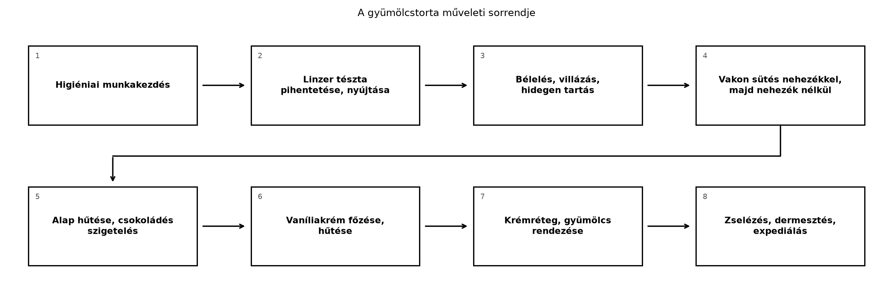

A vendég a pultnál mutatja: a gyümölcstorta alja délelőtt tízre átázott, a krém levet ereszt, a linzertorta rácsán pedig látni, hogy a lekvár felforrt. A műhelyben tegnap készült sült túrótorta közepe repedezett, a teteje sötétbarna, a széle viszont már kiszáradt. Mindhárom termék omlós tésztából készült, mégis háromféle hiba látható. A közös ok nem a tészta, hanem a tortaalap kezelése: mikor kell vakon sütni, hogyan kell a nedvesség ellen zárni, és milyen hőfokon kell a tojásos-tejes túrótölteléket átsütni. Ebben az alfejezetben ezt tanulod meg.
Definíció. Omlós tésztából készült tortának nevezzük azokat a kikészített süteményeket, amelyeknek az alapja zsiradékkal lazított, porhanyós, hidegen nyújtott omlós tészta, tölteléke pedig lekvár, gyümölcs, túró, főzött krém vagy ezek kombinációja.
A három legfontosabb csoport ebben a fejezetben:
Mindháromnál ugyanaz az omlós tészta alapszabály: a vaj hideg legyen, a tésztát ne gyúrjuk agyon, és pihentessük hűtve. A tésztaalap hibái onnan indulnak, ha a vaj megolvad a nyújtás vagy formázás közben. A részletes tésztatechnológiát a(z) Gyúrt omlós tészták: sárga, barna, kakaós, angol, fehér és sós linzer alfejezet tárgyalja, a túró kiválasztását pedig a(z) Savanyított tejtermékek, túró és sajtok a cukrászatban alfejezet.
A gyümölcstorta és több krémmel töltött omlós torta alját vakon sütjük (blind baking). Ez azt jelenti, hogy a nyers tésztát töltelék nélkül, elősütjük, hogy később a nedves krém vagy gyümölcs ne áztassa el.
Megjegyzés. A pontos hőfok és idő a sütő típusától, a tészta vastagságától és a forma méretétől függ, ezért a megadott értékek tanulási értékek; a gyártói/üzemi sütőbeállítást és a saját próbasütés eredményét mindig ellenőrizni kell.
A friss gyümölcs, a lekvár és a főzött krém vizet ad le. Ha ez a víz eléri az omlós tésztát, a tészta elveszti roppanósságát, szivacsossá, nyerses hatásúvá válik.
Szabály. Nedves töltelék esetén az omlós alapot mindig zárjuk. A záróréteg lehet: - vékony, temperált vagy olvasztott étcsokoládé réteg, - leheletnyi kakaóvaj (szórással és ecsettel eloszlatva), - vékony, beszárított tojásfehérje-réteg, ha a termék ízvilága ezt megengedi, - kevés, szárazon ledarált olajos mag vagy zsemlemorzsa a tészta tetején, ha a receptúra ezt tartalmazza.
A csokoládés és kakaóvajas záróréteg előnye, hogy zsíros, ezért vízzel nem elegyedik, és szobahőmérsékleten is vékony, roppanó réteget ad.
Gyakorlati megoldás. A vakon sütött, még langyos tésztát vékonyan bevonhatjuk olvasztott kakaóvajjal, vagy ecsettel eloszlatott temperált étcsokoládéval, majd hagyjuk megszilárdulni. A csokoládét ne öntsük vastagon, mert a tortaszelet vágásakor az egész réteg letörhet.
A gyümölcsös oldalról is csökkenthető a nedvesség: a gyümölcs legyen megmosva és jól lecsepegtetve; a híg, vizes gyümölcskészítményt ne tegyük közvetlenül a tésztára.
Recept (linzertorta, 1 db 26 cm-es forma).
| Nyersanyag | Mennyiség (g) | Megjegyzés |
|---|---|---|
| Sárga linzer tészta | 600 | alsó lap és rács |
| Baracklekvár vagy málnalekvár | 250 | sűrű, magas szárazanyag-tartalmú |
| Tojás | 20 | a rács lekenéséhez |
| Összesen | 870 | tájékoztató nyers tömeg |
Eljárás.
Kritikus pont. A lekvár magas cukortartalma segít a tartósításban, de a sütés közben felforr. A forma alá tegyünk sütőlemezre sütőpapírt, hogy a kifolyó lekvár ne égjen a sütő aljára.
A gyümölcstorta alapesete: vakon sütött omlós alap, azon főzött vaníliakrém, friss vagy konzervgyümölcs, végül fényes tortazselé. A főzött krém ebben a termékben jól bevált, mert kevésbé folyik, mint a hagyományos tejszínhab, és a gyümölcs alatt stabil marad. A krém a hőkezelés miatt élelmiszerbiztonsági szempontból is kedvezőbb, ha a tojást teljesen átsütjük.
A gyümölcsöt mosás után alaposan lecsepegtetjük, szükség szerint hámozzuk, magozzuk, daraboljuk. A bogyós gyümölcsök (eper, málna, áfonya) maradhatnak egészben, de csak szárazon kerüljenek a tortára. A konzervgyümölcs levét engedjük le, mert a híg lé átáztatja a krémet és a tésztát.
Definíció. A tortazselézés olyan vékony, áttetsző vagy gyümölcsízű réteg felvitele a gyümölcsre, amely megköti a felületet, fényt ad, és lassítja a gyümölcs száradását.
A zselé készülhet: - gyümölcsszörp és lapzselatin vagy porzselatin oldatából, - készen vásárolt, hidegen oldódó tortazseléporból, - gyümölcszselé-alapanyagból.
Szabály. A zselét mindig a gyártói utasítás szerint oldjuk fel, és csak annyira hűtsük, hogy ecsettel vagy kanállal folyamatosan lehessen vele dolgozni. A túl forró zselé „megfőzi” a friss gyümölcsöt, a túl hideg zselé már nem folyik szét.
A zselé réteg legyen vékony, de összefüggő. A gyümölcs tetejét fényessé kell tennie.
Recept (sült túrótorta, 1 db 26 cm-es forma).
| Nyersanyag | Mennyiség (g) | Megjegyzés |
|---|---|---|
| Sárga linzer tészta | 300 | az alaphoz |
| Félzsíros vagy zsíros tehéntúró | 700 | áttörve |
| Cukor | 140 | finom kristálycukor |
| Tejföl | 120 | legalább 20% zsírtartalmú tájékoztató |
| Tojássárgája | 40 | kb. 2 db közepes |
| Tojásfehérje | 80 | kb. 2–3 db közepes |
| Búzakeményítő | 40 | a töltelék kötéséhez |
| Citromhéj | 2 | reszelt |
| Vanília | 1 | paszta vagy kivonat |
| Mazsola | 40 | opcionális, beáztatva |
| Összesen | 1463 | tájékoztató nyers tömeg |
Eljárás.
Higiénia. A tojásos-tejes túrótöltelék hőkezelése kritikus pont. A sütési hőfokot, az időt és a maghőmérsékletet dokumentálni kell. A megsült tölteléket nem szabad hosszan melegen tartani, mert a 20–45 °C közötti tartományban a túlélő baktériumok elszaporodhatnak (ellenőrizendő: HACCP-útmutató). A kész tortát lefedve, hűtve tároljuk.
Számítás 1. Tészta átszámítása kisebb formára.
Egy 26 cm-es linzertortához 600 g tésztát ír elő a receptúra. Mennyi
tészta kell egy 18 cm-es formához, ha a tészta vastagsága azonos?
Az azonos vastagság miatt a tömeg a forma területével arányos:
Tegyünk fel tehát kb. 290 g tésztát; az enyhe ráhagyás a rács vágási vesztesége miatt észszerűbb. ∎
Számítás 2. Sütési veszteség.
A sült túrótortához 1,20 kg túrótölteléket készítünk. Sütés és hűlés
után a töltelék tömege 1,05 kg. Mekkora a veszteség százalékban?
A túrótöltelék sütési vesztesége kb. 12,5%. Ezt a kalkulációnál be kell építeni a bruttó anyaghányadba. ∎
Jogszabály. A friss gyümölcsöt, tojást, tejet és tejszínt érintő termékekre az élelmiszer-higiéniai követelményeket a 852/2004/EK rendelet szerinti HACCP-alapú eljárásban kell kezelni. A tojásos-tejes túrótöltelék hőkezelése, gyors hűtése és hűtött tárolása dokumentált CCP lehet (ellenőrizendő: üzemi HACCP-terv). A csomagolatlan sütemények fogyasztói tájékoztatásakor a 14 allergéncsoportot a 1169/2011/EU rendelet szerint kell elérhetővé tenni: glutén (búzaliszt), tojás, tej, valamint a felhasznált csokoládéban, olajos magvakban lévő allergének. A „gluténmentes” vagy „laktózmentes” felirat csak a vonatkozó összetételi feltételek teljesülése esetén használható (ellenőrizendő: hatályos jelölési szabályok).
Hűtés. A kész gyümölcstortát és sült túrótortát 0–5 °C-on kell tartani. A gyümölcstorta friss gyümölcse és főzött kréme miatt hűtőláncba tartozik. A tejszínes krémmel vagy friss gyümölccsel töltött terméket nem szabad hosszan szobahőmérsékleten hagyni.
Cél. Készíts el egy vakon sütött, csokoládéval szigetelt omlós aljú gyümölcstortát, és értékeld a tészta szárazságát, a krém állagát és a zselé fényét.
Eszközök és anyagok. Lisztezett nyújtófelület, sodrófa, 26 cm-es kapcsos vagy peremes tortaforma, sütőpapír, vakon sütő nehezék, villázó, hűtő, ecset, nyújtótészta-receptúra szerinti anyagok, főzött vaníliakrém anyagai, friss gyümölcs, tortazselé, étcsokoládé vagy kakaóvaj.
Higiénia. Munkaruha, hajháló, ékszer le, kézmosás. Minden felület és eszköz tiszta; a nyers tészta és a kész krém eszközei ne érintkezzenek. A gyümölcsöt folyó víz alatt mossuk, majd száraz papírtörlőre tesszük.
Biztonsági korlát. A gépi művelet tanműhelyi vagy üzemi környezetben, oktatás után és felügyelet mellett végezhető; otthon háztartási géppel, kis adagban gyakorolj. A sütőből való kivételkor mindig száraz sütőkesztyűt használj, a forró formát ne emeld vizes ruhával. A forró csokoládé és a meleg zselé óvatosan kezelendő.
Termék neve: Omlós aljú gyümölcstorta
Termékcsoport: kikészített sütemény, omlós tésztás
torta
Alapmennyiség: 1 db 26 cm-es torta, kb. 12–14
szelet
| Nyersanyag | Mennyiség (g) | Megjegyzés |
|---|---|---|
| Sárga linzer tészta | 350 | vakon sütött alap |
| Étcsokoládé 56% | 40 | szigetelőréteg |
| Tej | 400 | a főzött krémhez |
| Cukor | 80 | a főzött krémhez |
| Tojássárgája | 60 | a főzött krémhez |
| Kukoricakeményítő | 35 | a főzött krémhez |
| Vaj | 20 | a főzött krémhez |
| Vanília | 1 | a főzött krémhez |
| Friss gyümölcs | 600 | eper, málna, áfonya, kiwi stb. |
| Tortazselé | 150 | kész zselé, gyártói utasítás szerint |
| Összesen | 1736 | tájékoztató nyers tömeg |
Műveleti sorrend.

A diagram szöveges leírása. A gyümölcstorta készítése a higiéniai munkakezdéssel indul, ezt követi az omlós alap nyújtása, formázása, hidegen tartása, majd a vakon sütés. A kisült, kihűlt alapot szigeteljük, erre kerül a főzött krém, a gyümölcs és a zselé, végül hűtőben dermesztjük.
Számozott műveleti lépések (tájékoztató értékek; ellenőrizendő: üzemi technológiai utasítás és gyártói adatlap):
Kritikus pontok.
Allergének. Glutén (búzaliszt), tojás, tej; a csokoládé szóját és tejet is tartalmazhat; diófélék/mandula, ha a tészta vagy a műhely keresztszennyeződése miatt jelen van. A zselépor adalékanyagai a gyártói jelölés szerint ellenőrizendők.
Minőségi jellemzők. Szabályos, 26 cm-es forma; a tészta roppanós, a felület aranysárga; a gyümölcs friss, fényes, a zselé vékony; a metszet nem folyik szét; íz harmonikus.
Tárolás, eltarthatóság. 0–5 °C-on, lefedve; friss gyümölcsös és főzött krémes termékként rövid időn belül fogyasztandó (ellenőrizendő: saját HACCP, gyártói adatlap).
A kész omlós tésztás tortákat érzékszervi úton és tömeggel ellenőrizzük.
A tömegellenőrzésnél a technológiai lapon szereplő kész tömeg és az expediálási tömeg közötti eltérés a gyártási veszteség miatt lehetséges; a nagy, ismétlődő eltérés hiba.
Átázott alap. Tünet: a gyümölcstorta alja puha, szivacsos, a tészta nem roppan. Ok: nincs szigetelés, vagy a gyümölcs túl vizes. Megelőzés: vakon sütés, csokoládés/kakaóvajas zárás, gyümölcs lecsepegtetés.
Zsugorodott oldal. Tünet: a tészta a forma szélén lecsúszik, a torta alacsony. Ok: a tésztát melegen, nem hűtve tették a sütőbe, vagy túlgyúrták. Megelőzés: hűtés sütés előtt, rövid dagasztás.
Repedezett, folyós túrótöltelék. Tünet: a túrótorta teteje repedezett, a közepe kocsonyásan folyik. Ok: túl magas hőmérsékleten sütötték, a tojásfehérjét túlverték, vagy a túró túl sok vizet adott le. Megelőzés: mérsékelt, fokozatos sütés, a túró lecsepegtetése, a tojáshabot éppen csak beleforgatva.
Foltos, matt zselé. Tünet: a zselé nem fényes, a gyümölcs alatt buborékok látszanak. Ok: a zselé túl hideg volt, vagy a gyümölcs felülete poros/vizes. Megelőzés: a zselét a gyártói hőmérsékleten használjuk, a gyümölcsöt szárazon rendezzük.
Egy cukrászüzemben hétvégi rendelésként 10 db omlós aljú gyümölcstorta készült. A dolgozó időt akart spórolni, ezért az alapot nem sütötte vakon, hanem a nyers tésztára közvetlenül rátette a krémet és a friss epret. A torták délelőtt szépek voltak, de két óra múlva a tészta közepén sötét foltok jelentek meg, és a szeletek alja szétesett. A hiba oka: a tészta meg sem sült, tehát nyers lisztet és (a sárga linzerben) nyers tojást tartalmazó, fogyasztásra alkalmatlan alapra került a krém és az eper; ez élelmiszerbiztonsági hiba, nem pusztán minőségi. A kiadott tortákat vissza kellett hívni, a megmaradtakat selejtezni (ellenőrizendő: üzemi HACCP-eljárás). A tanulság: a vakon sütés és a csokoládés szigetelés nem önkényes dísz: a sütés az élelmiszer-biztonság és az átázásgátlás miatt is kötelező lépés. A későbbi rendeléseknél az alapot elősütötték, lehűtötték, csokoládéval zárták, és a torták egész nap roppanósak maradtak.
1. feladat (A)
Sorold fel a vakon sütés lépéseit, és indokold meg, miért kell a tésztát
villázni.
2. feladat (A)
Egy 26 cm-es linzertortához 600 g tészta szükséges. Számítsd ki, mennyi
tészta kell 22 cm-es formához, ha a vastagság azonos.
3. feladat (B)
A sült túrótortánál a nyers töltelék 1,20 kg, a sült töltelék 1,05 kg.
Számítsd ki a sütési veszteséget százalékban, és ellenőrizd a
képletet.
4. feladat (B)
A gyümölcstorta technológiai lapja szerint 150 g kész zselét kell
felvinni. A gyártói utasítás szerint 1 kg kész zseléhez 70 g zseléport
keverünk. Mennyi zselépor és mennyi folyadék kell 150 g zseléhez? (A
folyadék a kész tömeg fennmaradó része; az arány a gyártói adatlapon
ellenőrizendő.)
5. feladat (C)
Egy sült túrótorta közepe repedezett, a teteje sötét, a széle kiszáradt.
Mondd meg, mi lehet az ok, és hogyan javítanád a következő
gyártásnál.
6. feladat (D)
Készítsd el a gyakorlati útmutató szerinti gyümölcstortát otthon vagy
tanműhelyben. Töltsd ki a technológiai lapot, mérd meg a kész tömegét,
és értékeld az alábbi szempontok szerint: alj szárazsága, krém állaga,
zselé fénye, forma rendezettsége.
Önellenőrzés – válaszok
Feladatok megoldásai
1. feladat, A
Lépések: nyújtás, formába fektetés, villázás, hűtés, papír + nehezék,
elősütés, nehezék eltávolítása, utósütés. A villázás a keletkező gőz
távozását segíti, különben a tészta felhólyagosodik.
2. feladat, A
.
g, tehát kb. 430 g tészta. ∎
3. feladat, B
.
Ellenőrzés:
kg, és
kg. ∎
4. feladat, B
.
Zselépor:
g.
Folyadék:
g.
A gyártói arányt mindig ellenőrizd. ∎
5. feladat, C
Ok: túl magas hőmérséklet, túl hosszú sütés, esetleg a tojáshab túl
keményre verése. A sötét tetejű, kiszáradt szélű túrótorta azt jelzi,
hogy a hő nem oszlott el egyenletesen. Javítás: mérsékeltebb hőfok,
védőpapír, a tojáshabot csak lazán beforgatni, a túrót lecsepegtetni, és
a sütőből kivéve fokozatosan hűteni.
6. feladat, D
Értékelési szempontok: az alap vágáskor roppanjon, ne legyen szivacsos;
a krém ne folyjon; a zselé vékony, fényes, repedésmentes legyen; a
gyümölcs rendezett, a forma széle ne zsugorodjon be. A kész tömeg tűrése
a technológiai lap szerint ellenőrizendő.
Az omlós tésztából készült torták közös alapja a hideg, pihentetett, zsiradékkal lazított omlós tészta. Linzertortánál az alsó lap és a rács között sűrű lekvárt használunk, és a rácsot tojással fényesre sütjük. Gyümölcstortánál az alapot vakon sütjük, majd csokoládéval vagy kakaóvajjal zárjuk, hogy a nedves krém és gyümölcs ne áztassa át; a gyümölcsöt szárazon rendezzük, a zselét a gyártói utasítás szerint, vékonyan visszük fel. A sült túrótortánál a túrót áttörjük, a tojásfehérjét óvatosan forgatjuk bele, és a tölteléket közepes-magas hőmérsékleten, teljesen átsütjük. A tojásos-tejes töltelék hőkezelése és a kész termék hűtése kritikus pont. Legfontosabb képletek: a korongmérethez; a sütési veszteséghez. A hibák gyakori okai: nyers vagy nem szigetelt alap, melegen sütött tészta, túl magas sütőhőmérséklet. Továbbvitt eredmények: az itt tanult vakon sütés, csokoládés zárás és hűtési fegyelem a vizsgafelkészülés gyakorlati tortafeladataiban és a későbbi cukrászüzemi munkában is közvetlenül alkalmazandó.